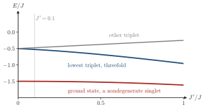

Page 4 of 11 of this session
8.5 The dimerized Heisenberg model, a first step before a spin liquid
Can a Heisenberg model of many spins have a ground state with no magnetic order? We will now see that it can without frustration, when the bonds are made unequal, as in a lattice of decoupled dimers whose ground state is a product of singlets. Its lowest excitation still has spin \(1\), so this state is not yet a quantum spin liquid.
\[|GS\rangle = \frac{1}{\sqrt2}\Big(|{\uparrow\downarrow}\rangle - |{\downarrow\uparrow}\rangle\Big), \qquad \langle \mathbf S_i \rangle = 0. \tag{8.3}\]
This is the singlet of two spins one half, the ground state of the Heisenberg dimer \(J\,\mathbf S_0\cdot\mathbf S_1\) with \(J>0\). Its energy is \(-3J/4\), the threefold triplet is at \(+J/4\), and \(\langle\mathbf S_i\rangle=0\) on both sites.
Before we study a frustrated Hamiltonian, it is useful to build the simplest possible macroscopic quantum magnet and to check explicitly that its ground state does what (8.3) told us. Let us take a fully dimerized Heisenberg model, which is made of dimers that are completely decoupled from each other, placed on a chain or on a two-dimensional lattice,
\[H = \sum_n J\, \mathbf S_{2n}\cdot \mathbf S_{2n+1}, \qquad J>0. \tag{8.4}\]
Since every dimer is decoupled from its neighbors, we can write the many-body ground state exactly, as a product of singlets over the pairs of the dimers.
The ground state of the decoupled dimers (8.4) is
\[|\Psi\rangle \sim \bigotimes_n \Big(|{\uparrow_{2n}\downarrow_{2n+1}}\rangle - |{\downarrow_{2n}\uparrow_{2n+1}}\rangle\Big), \qquad \langle \mathbf S_i\rangle = 0 \text{ on every site}. \tag{8.5}\]
It is exact, and its energy is \(-3J/4\) per dimer, so \(-3NJ/8\) for \(N\) sites. The lowest excitation turns one singlet into a triplet, which costs the energy \(J\) and has spin \(1\).
The steps From the dimers (8.4) to the ground state (8.5) and its gap
Let us take two dimers first, the four sites \(0,1,2,3\) with \(H=J\,\mathbf S_0\cdot\mathbf S_1+J\,\mathbf S_2\cdot\mathbf S_3\). The two terms act on different sites, so they commute, and we can diagonalize them together. An eigenstate is a product of one eigenstate of each dimer, and its energy is the sum. Each dimer is in its singlet at \(-3J/4\) or in its triplet at \(+J/4\), which gives
\[E=-\tfrac32J \ \ (1 \text{ state}), \qquad -\tfrac12J \ \ (6 \text{ states}), \qquad +\tfrac12J \ \ (9 \text{ states}),\]
with \(1+6+9=16\) states in total. The lowest level has a singlet on both dimers, and it is nondegenerate.
With \(N\) sites there are \(N/2\) dimers, and all the terms of (8.4) commute in the same way. The ground state has a singlet on every dimer, which is (8.5), with the energy
\[E_0=\frac N2\Big(-\frac34J\Big)=-\frac{3NJ}{8}.\]
The lowest excited level puts one dimer in its triplet, at \(E_0+J\). It has \(3N/2\) states, three for each of the \(N/2\) dimers, and each of them has spin \(1\).
The last step is the spin of one site. In the singlet \((|{\uparrow\downarrow}\rangle-|{\downarrow\uparrow}\rangle)/\sqrt2\) the site \(0\) is up with probability \(\tfrac12\) and down with probability \(\tfrac12\), and the trace over the site \(1\) leaves no coherence between the two. So the reduced density matrix of the site is
\[\rho_0=\tfrac12\,\mathbb 1, \qquad \langle\mathbf S_0\rangle=\mathrm{Tr}\big(\rho_0\,\mathbf S_0\big)=0,\]
since the spin matrices have zero trace. In the product (8.5) every site belongs to one singlet, so \(\langle\mathbf S_i\rangle=0\) on every site.
On a chain this is the dimerized model of Section 7.6, and (8.5) is the product of singlets (7.8), whose entanglement entropy does not grow with the subsystem. In one sense this is a trivial Hamiltonian, a collection of independent zero-dimensional problems. But it already shows something important. A macroscopic Heisenberg Hamiltonian can have a ground state that does not break time-reversal symmetry, and this state is the direct generalization of the two-site singlet (8.3) to an extensive system. If we add small couplings between the dimers, the state changes smoothly and it still does not break time-reversal symmetry. In a small chain we can follow this directly, and Schematic 8.4 does so for four sites.

There is, however, an important difference to make here, because this state is not yet a quantum spin liquid. Its fundamental excitations still have spin \(1\). If we turn one singlet into its triplet partner, we obtain a triplon, which is a local transition from singlet to triplet. It has the same structure as a magnon, with only a different name. A state that is built in this way, from a fixed and static pattern of singlets, is called a valence bond solid (VBS). To obtain a real quantum spin liquid, with spin-\(1/2\) excitations instead of spin-\(1\) triplons, we need more than a static dimer covering. We need the singlets to fluctuate and to resonate over the whole lattice, and this is the frustrated case that we study in the next section. Figure 8.3 shows this difference explicitly.

The ground state of decoupled dimers of spins one half is the product of singlets
\[|\Psi\rangle \sim \bigotimes_n \Big(|{\uparrow_{2n}\downarrow_{2n+1}}\rangle - |{\downarrow_{2n}\uparrow_{2n+1}}\rangle\Big).\]
We turn one singlet into a triplet. What is the spin of this excitation?
Show the answers
- A. ✗ False
This is false. Both spins stay on the same bond, and two spin-1/2 give \(0\) or \(1\) and never \(1/2\). The state \(|{\uparrow\uparrow}\rangle\) on the bond has \(S^z=1\).
- B. ✗ False
This is false. The product of dimers with one of them in \(|{\uparrow\uparrow}\rangle\) has total \(S^z=1\), so it is not a singlet. Being a product state does not fix the spin.
- C. ✓ True
This is true. The two spins of the dimer are in a triplet, which has \(S=1\). Both spins stay on the same bond, so this excitation has the structure of a magnon.
Decoupled dimers of spins one half have the Hamiltonian
\[H = \sum_n J\, \mathbf S_{2n}\cdot \mathbf S_{2n+1}, \qquad J>0.\]
We add a weak coupling \(J'\) between neighboring dimers. What happens to the ground state?
Show the answers
- A. ✗ False
This is false. For four sites with \(J=1\) and \(J'=0.1\) between the dimers, the ground state has energy \(-1.501\) and it is nondegenerate with \(S=0\). The gap of order \(J\) forbids a symmetry-broken state.
- B. ✓ True
This is true. The singlet-triplet gap protects the state, so a small perturbation changes it only a little. The state remains a valence bond solid until the coupling is of the order of the gap.
- C. ✗ False
This is false. For four sites with \(J=1\) and \(J'=0.1\) the lowest energy is \(-1.501\) and the next one is \(-0.527\). The ground state is unique and the gap is about \(0.97\).
The lowest levels of the four-site chain against \(J'/J\). The vertical line marks \(J'=0.1J\).
Decoupled dimers of spins one half, with \(N\) sites in total, have the Hamiltonian
\[H = \sum_n J\, \mathbf S_{2n}\cdot \mathbf S_{2n+1}, \qquad J>0.\]
What is the ground-state energy?
Show the answers
- A. ✗ False
This is false. It counts one singlet per site, but a singlet takes two sites. For \(N=2\) it gives \(-3J/2\), while the single dimer has \(-3J/4\).
- B. ✓ True
This is true. There are \(N/2\) dimers, and each one is in its singlet with \(\mathbf S_{2n}\cdot\mathbf S_{2n+1}=-3/4\). For \(N=4\) this gives \(-3J/2\), the value of the open chain of four sites with no coupling between its two dimers.
- C. ✗ False
This is false. It is the value \(-J/4\) per dimer of the Ising coupling \(S^z_{2n}S^z_{2n+1}\) alone. In the singlet the \(x\) and \(y\) terms add \(-J/4\) each, which gives \(-3J/4\) per dimer.
We couple two dimers by a weak bond \(J'\) between them, which is the open chain of four sites
\[H=J\,\mathbf S_0\cdot\mathbf S_1+J\,\mathbf S_2\cdot\mathbf S_3+J'\,\mathbf S_1\cdot\mathbf S_2.\]
Compute the ground-state energy to second order in \(J'\), and compare it with the value \(-1.500961J\) of the exact diagonalization at \(J'=0.1J\).
Solution
We start from the ground state of the two decoupled dimers, \(|ss\rangle\), the product of two singlets at \(-\tfrac32J\), and we take \(V=J'\,\mathbf S_1\cdot\mathbf S_2\) as the perturbation. To first order \(\langle ss|V|ss\rangle=J'\langle\mathbf S_1\rangle\cdot\langle\mathbf S_2\rangle=0\), since the two singlets are independent and each one has \(\langle\mathbf S_i\rangle=0\).
For the second order we need \(V|ss\rangle\). Since \(\langle s|S^a_1|s\rangle=0\) for \(a=x,y,z\), the state \(S^a_1|s\rangle\) has no singlet part, so it is a triplet of the first dimer. In the same way \(S^a_2\) turns the second singlet into a triplet. So \(V|ss\rangle\) has both dimers in a triplet, at \(+\tfrac12J\), which is \(2J\) above \(|ss\rangle\). Its norm uses \(\langle s|S^a_1S^b_1|s\rangle=\tfrac14\delta_{ab}\), since one site of the singlet is in the state \(\tfrac12\mathbb 1\),
\[\langle ss|V^2|ss\rangle=J'^2\sum_{a}\frac14\cdot\frac14=\frac{3J'^2}{16}.\]
The second order is then
\[E_0\approx-\frac32J-\frac{3J'^2/16}{2J}=-\frac32J-\frac{3J'^2}{32J}.\]
At \(J'=0.1J\) this gives \(-1.500938J\), against \(-1.500961J\) of the exact diagonalization, so the two differ by about \(2\times10^{-5}J\). The correction is small because it is divided by the energy \(2J\) of the excited dimers. This gap of order \(J\) is what keeps the ground state smooth and nondegenerate when we couple the dimers, as long as \(J'\) stays well below \(J\).
Try it. Run the dimerized chain with \(J=1\pm0.2\) and compare the profile with the uniform chain. The magnetization induced by the local field should decay much faster along the dimerized chain. Change 0.2 to 0.05 and see how the decay length grows when the dimerization is weaker.
- In Section 8.6 the singlets stop being frozen and resonate, and the two halves of a broken singlet separate as free spinons.
- In Section 8.9 the alternating bonds of this valence bond solid give a gapped band of spinons.
- In Section 9.9 a gapped chain, the spin-\(1\) one, screens an impurity with an exponential decay, as the dimerized chain of the notebook does.